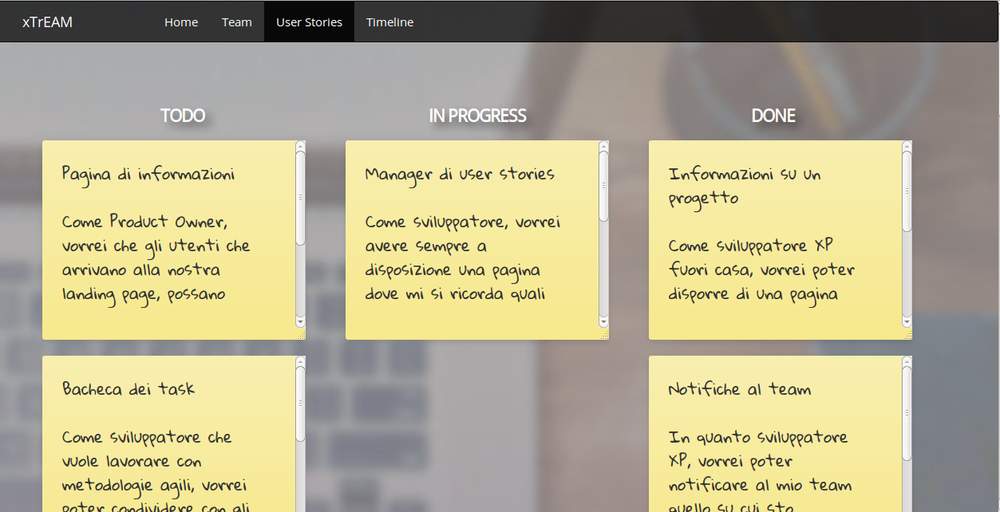
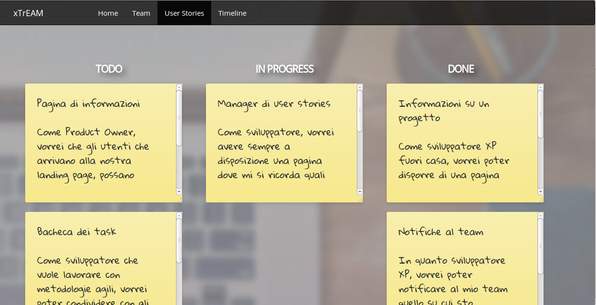

Tester
Ti posso consigliare xTrEAM perchè ho contribuito a costruirla. Il mio ruolo? Tentare di distruggerla! Perchè? Molte sono le ragioni...
Una domanda che ogni programmatore teme: "che devo fare?". I test aiutano ad avere un'idea più chiara di ciò che si vuole implementare: per questo motivo, spesso è più utile iniziare a codificare dai test, per poi costruire gli altri componenti in modo da farli funzionare. Si chiama Test Driven Development, e funziona!
Gli incubi che agitano la notte precedente ad una release sono i bug nascosti. Se il programma presenta un difetto, il cliente, prima o poi, lo scoverà. E non sarà un bel momento. L'unico antidoto è prevenire, controllando che ogni componente, ogni metodo, si comporti come previsto. Per fortuna il processo può essere automatizzato. Viva JUnit!
Quando da java si passa al web, JUnit non può più aiutare: il testing deve essere manuale. Ogni pagina, ogni form, ogni bottone deveno rispondere ai comandi come previsto. Finchè questo non avviene, il codice deve essere raffinato e revisionato.
E responsabile svn
Ciò che non consiglierei a nessuno, invece, è utilizzare GitHub in modilità SVN: i problemi da risolvere sono molti e molto poco comprensibili...
I repository on-line sono uno strumento fantastico: permettono di condividere il codice, di essere aggiornati sulle modifiche, nonchè di tornare indietro in caso di modifiche poco efficaci. Tuttavia, quando il controllo di versione decide di non collaborare, non è semplice ridurlo a più miti consigli.
Due settimane: è quanto abbiamo impiegato a rendere operativo e fruibile a tutti il repository. Prima l'effiemra speranza di poter utilizzare Google Code, poi la difficile migrazione verso GitHub, in seguito l'impossibilità di rinominare pacchetti ed i problemi di integrazione con Eclipse hanno reso un ruolo secondario decisamente snervante.
Qundo si apre un repository GitHub, questo diviene pubblico. Ciò significa che chiunque può accedervi per contribuire, scaricare il codeice, o anche semplicemente curiosare. Si rende necessario offire un'adeguata presentazione del progetto nonchè delle convenzioni adottate dai membri: in una parola, un wiki.
Curioso? Vuoi saperne di più? consulta la pagina dedicata.
 
